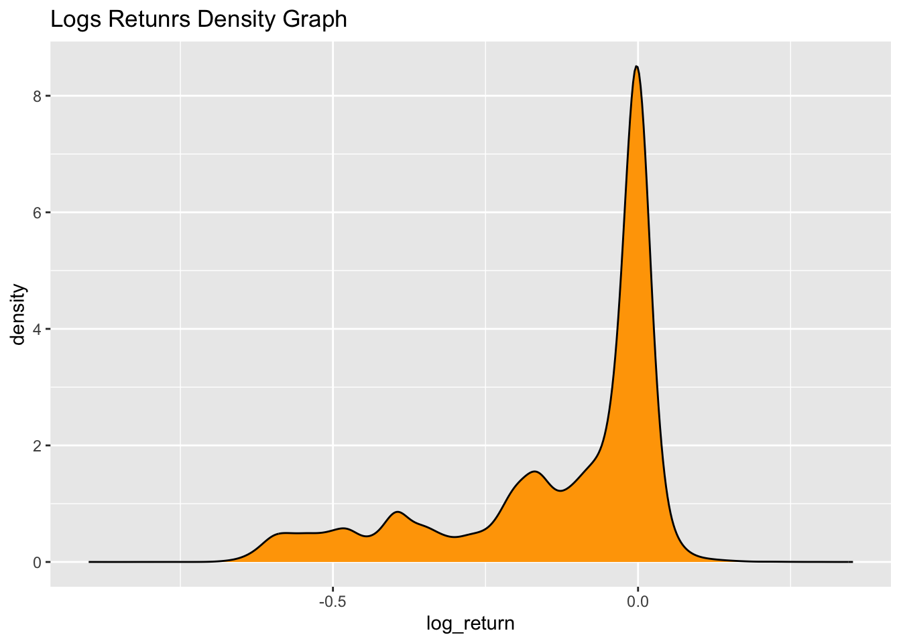
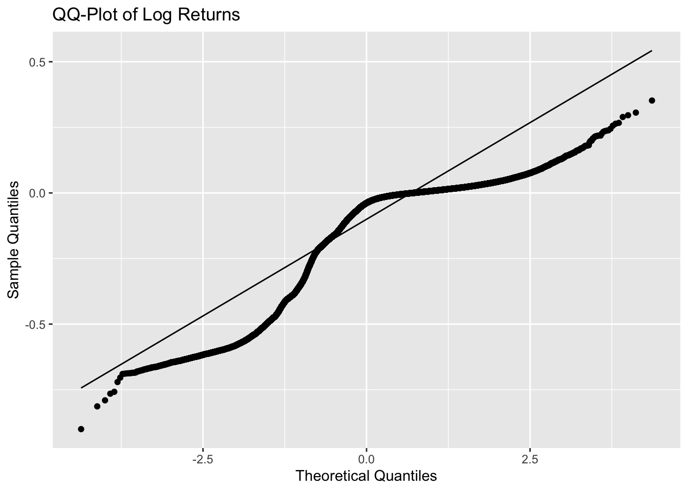
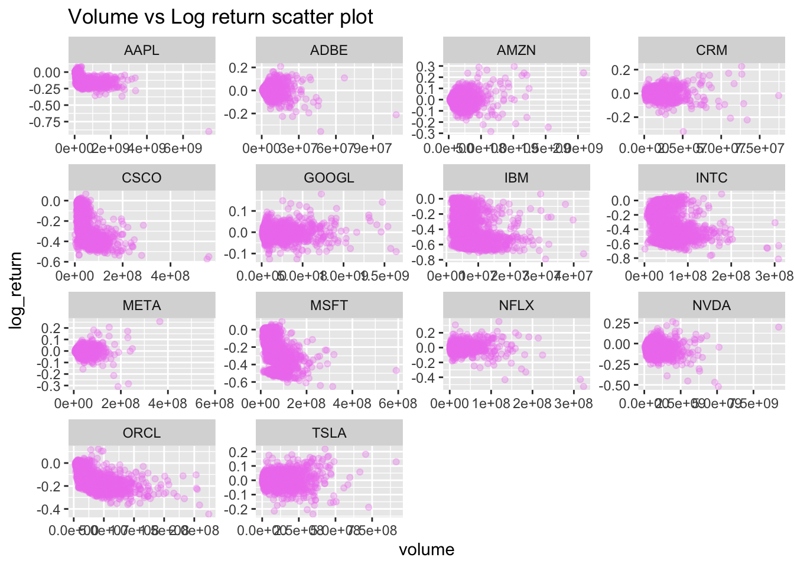
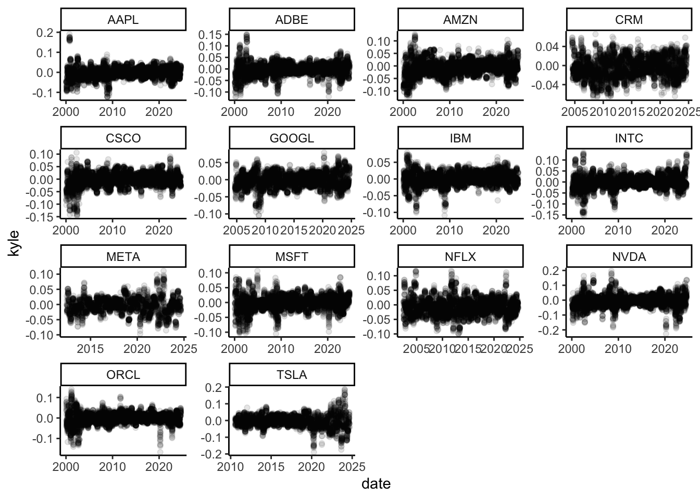

For this assignment we practice data transformation using a dataset of the daily prices and daily trading volumes of a group of large technology stocks that trade on US stock exchanges. Click here to download stocks.csv, which contains data going back to 2000. The dataset contains several variables, including:
symbol: which is the ticker symbol for the stock
date: which is the trading date
open, high, low, and close, which are the price at the start of trading, the high price during the day, the low price during the day, and the stock price at the close of trading (unit is USD)
adjusted: which is the stock price at close adjusted for the financial effects of special events (such as dividends). Unit is USD
volume: which is the number of shares which traded during a given trading day.
library(tidyverse)library(TTR)library(kableExtra)stocks =read_csv("/Users/nanafrimpong/Desktop/SPS Fall 2024/Data & Acq 607/Data 607 R File/Assignment 4/Lab 4/stocks.csv")stocks |>head(10) |>kable()
symbol
date
open
high
low
close
volume
adjusted
AAPL
2000-01-03
0.936384
1.004464
0.907924
0.999442
535796800
0.8440041
AAPL
2000-01-04
0.966518
0.987723
0.903460
0.915179
512377600
0.7728457
AAPL
2000-01-05
0.926339
0.987165
0.919643
0.928571
778321600
0.7841553
AAPL
2000-01-06
0.947545
0.955357
0.848214
0.848214
767972800
0.7162958
AAPL
2000-01-07
0.861607
0.901786
0.852679
0.888393
460734400
0.7502258
AAPL
2000-01-10
0.910714
0.912946
0.845982
0.872768
505064000
0.7370310
AAPL
2000-01-11
0.856585
0.887277
0.808036
0.828125
441548800
0.6993311
AAPL
2000-01-12
0.848214
0.852679
0.772321
0.778460
976068800
0.6573902
AAPL
2000-01-13
0.843610
0.881696
0.825893
0.863839
1032684800
0.7294905
AAPL
2000-01-14
0.892857
0.912946
0.887277
0.896763
390376000
0.7572942
All of the the stock prices and the trading volume have been adjusted for stock splits, so that the data provide a continuous record of how prices and trading volume changed.
There are several important functions and packages that you will need to use to complete this exercise.
We will use the TTR package (which is part of the tidyquant family of packages, see here). The main function we will use is called runMean. An alternative package that is also very nice but not part of the tidyverse is RcppRoll
install.packages("tidyquant")
library(tidyquant)
Registered S3 method overwritten by 'quantmod':
method from
as.zoo.data.frame zoo
If you aren’t very comfortable with logarithms, you should read more about them. They are one of the most important mathematical functions for data science. We aren’t using their mathematical properties much this week but they will be important throughout your data science journey. Khan Academy has a decent video, and this article in the journal nature has some more context.
We will calculate some correlation coefficients, using the cor function from base R (?cor to see how it is used). There is also a tidyverse package called corrr that is useful for calculating correlations on data frames, but we won’t use it for this lab.
The motivation for today’s assignment came from some news articles a few years ago about how big tech stocks collectively had a miniature meltdown after powering the stock market for several consecutive years, see this article at Morningstar
Problem 1: The price of a stock on a given day only conveys information in relation to the stock price on other days. One useful measure is the daily return of the stock, which we will define as the ratio of the adjusted closing price on the current day of trading to the adjusted closing price on the previous day of trading. Read the following article on window functions in dplyr: window functions in dplyr.
Find a function there that will help you calculate the daily return and use it along with mutate to add a return column to the data frame containing the daily return.
Hint: make sure to use group_by(symbol), otherwise your calculation might transpose prices from a different stock at the beginning of each time series.
Differences between the adjusted return and the return measured on the close price should indicate special corporate events such as dividends.
Calculate the un-adjusted return using the same technique you used to calculate the return, but replacing the adjusted variable with the close variable, and find the datapoint in the dataset where the return exceeded the unadjusted return by the greatest margin. (Hint to check you have done it right: it happened in November 2004). The reason that the close price and the adjusted price differ is because stock prices typically decrease when a dividend is paid (to account for the cash paid out). The adjusted value has been modified from the beginning of the initial data record to increase adjusted to compensate for dividends. A dividend is just a payment that a company makes periodically to those who hold stock.
stocks <- stocks %>%group_by(symbol) %>%mutate(return2 = close /lag(adjusted) -1) %>%ungroup()
If you are curious: Look for an old news article describing the significance of that event and tell me what happened
Problem 2: When working with stock price fluctuations or other processes where a quantity increases or decreases according to some multiplicative process like a growth rate (for example population growth) it is often better to work with the log of the growth rate rather than the growth rate itself. This allows standard summary statistics such as the mean to have a useful interpretation (otherwise you would have to use the geometric mean). Furthermore, the log transform is often useful to use on variables that are strictly positive, such as population growth rates or daily stock returns. To see why, consider a hypothetical stock which had a return of 0.5 (50% loss) on one day and 1.8 on the next day (80% gain). The mean of these two returns would be 1.075, or 7.5% per day. However, at the end of the two day period the stock would have lost 10% of its value (0.5*1.8 = 0.9). If we had computed the mean of the log(return) instead, we would have found that (log(0.5)+log(1.8))/2 = log(0.9^(1/2)), or approximately -5.2% per day, matching the observed price change.
Create a new variable called log_return which is the log of the return variable you calculated in the previous problem. Generate either a histogram or density plot of the distribution of log_return for the entire dataset. Then create a QQ-plot of log_return using geom_qq() and geom_qq_line(). What do you notice about the “tails” (right and left side/extreme edges) of the distribution from the QQ-plot? Are there visible signs of this in the density plot/histogram that you made?
The tails of the graph show a long tail QQplot graph. There are upward curves and downward curves within plot, meaning there are outliers in the data with really low values and big values. The tails of the plot shows it is skewed to the left
Warning: Removed 14 rows containing non-finite outside the scale range
(`stat_density()`).

ggplot( data = stocks, aes(sample = log_return)) +geom_qq() +geom_qq_line() +labs(title ="QQ-Plot of Log Returns", y ="Sample Quantiles", x ="Theoretical Quantiles")
Warning: Removed 14 rows containing non-finite outside the scale range
(`stat_qq()`).
Warning: Removed 14 rows containing non-finite outside the scale range
(`stat_qq_line()`).

Problem 3: Volume measures how many shares were traded of a given stock over a set time period, and high volume days often associate with important events or market dynamics.
Make a scatter plot of volume versus log_return, faceted by symbol to account for the fact that different stocks have different trading volumes. Do you see an association between volume and log_return in these scatter plots?
When there is increase in the log_return there is aloso increase in the volume of shares that are traded.
Warning: Removed 14 rows containing missing values or values outside the scale range
(`geom_point()`).

Use the cor function to compute the pearson’s correlation coefficient between volume and log_return for each symbol. Why do you think the correlations are close to 0?
Hint: use it with summarize and don’t forget that cor is a base R function so you will either need to filter NA values for volume and log_return or appropriately choose the use flag in the argument- see ?cor for more info.
The correlation is close 0 because there is non - linear relationship between both variables. There may be some hugh trading volumes with both low and high log_return values.
Next compute the correlation in the same manner but this time transform log_return using the absolute value function. Recreate the faceted scatter-plots from the first part of the problem but with the absolute-value transformed log_return. How have the correlations changed from the previous summary?
Problem 4: For this problem we will implement a more complicated mathematical transformation of data by calculating a measure of liquidity for each stock.
Liquidity is defined loosely as the ability for a given asset to be bought or sold without a large impact on price. Liquid assets can be bought and sold quickly and easily, whereas illiquid assets have large increases or decreases in their price when someone tries to buy or sell them in large quantities. Liquidity is considered an important property of a well functioning financial market, and declines in liquidity have been blamed for worsening or triggering stock market crashes.
Many methods have been invented to measure liquidity, but for this problem we will focus on a method called “Kyle’s \(\lambda\)”. Kyle’s \(\lambda\) estimates liquidity by using a linear regression between the absolute value daily return of a stock and the logarithm of the dollar volume of that stock. The time periods used to estimate this regression can vary, but here we will use daily returns and a one month time period (defined as 20 trading days). You will learn a lot about linear models in DATA 606 and other classes, but to be complete, \(\lambda\) is a coefficient in the following linear model: \[
|R_t-1| = c + \lambda \log((\mathrm{Volume})_t (\mathrm{close})_t) + \epsilon_t
\] where the coefficients \(c\) and \(\lambda\) will be calculated to minimize the error \(\epsilon_t\) over the past 20 trading days.
\(\lambda\) stands for the amount that the stock price will move in units of basis points for a given \(\log\) dollar volume of trade. A small \(\lambda\) indicates high liquidity, and a high \(\lambda\) indicates low liquidity.
\(\lambda\) can be be calculated using rolling averages on the time series data with the TTR package, specifically the function runMean which when used within a dplyr pipeline will calculate the mean over the past \(n\) data points. For example, the command:
adds a new variable which is equal to the mean of the log_return over the past 20 days. The mathematical formula for \(\lambda\) is: \[
\lambda = \frac{\mathrm{mean}(R_a\log( p_c V ))
- \mathrm{mean}\left(R_a\right) \mathrm{mean}\left(\log\left(p_c V\right) \right) }
{\mathrm{mean}\left(\log\left( p_c V \right)^2\right)
-\mathrm{mean}\left(\log(p_c V)\right)^2 }
\] where to make the formula easier to read we have defined \(R_a = |\mathrm{return} -1|\), \(p_c = \mathrm{close}\) and \(V = \mathrm{volume}\), and the averages have been taken over the past 20 days of data.
Add a new variable called kyle to the data frame by implementing the above formula for \(\lambda\). Make sure to read and implement the formula very carefully, and to use the runMean function to calculate the rolling average correctly.
stocks <- stocks %>%group_by(symbol) %>%mutate(vollume_log_dollar =log(volume*close),absolute_return_1 =abs(log_return -1)) %>%mutate( kyle_top =runMean(absolute_return_1 * vollume_log_dollar, n =20) -runMean(absolute_return_1, n =20) *runMean(vollume_log_dollar, n =20),kyle_bottom =runMean(vollume_log_dollar^2 , n =20) -runMean(vollume_log_dollar, n =20)^2,kyle = kyle_top/kyle_bottom)
Plot Kyle’s lambda for each stock over time (I would use a faceted scatterplot). What do you notice about how this measure of liquidity behaves (remember liquidity is high when \(\lambda\) is small)?
When the lamba become high it shows that liquidity is very low and when lambda is low it shows liquidity is very high. A low volume is more volatile so the lambda will be low and there liquidity will increase.
ggplot( data = stocks, mapping =aes(x = date, y = kyle)) +geom_point(alpha =0.1) +facet_wrap(~symbol, scale ="free") +theme_classic()
Warning: Removed 280 rows containing missing values or values outside the scale range
(`geom_point()`).

Next add a new variable to the dataframe called extreme which is true when the log_return for a given stock is either greater than 95% of other values of the log_return or less than 95% of all values of log_return. Use the percent_rankdplyr window function along with logical operators to create this variable. Then for each stock calculate the mean value of Kyle’s lambda for the days when the log_return had extreme values and for when it didn’t (as identified by the extreme variable). What do your calculations and figures indicate about liquidity during extreme events?
During extreme events like covid and 2009 financial crisis, there will be a decrease in liquidity as there is decrease in volume trading. During financial crisis investor are more careful, so they will move their investment to a different source which will increase the liquidity, meaning a decrease in lambda.